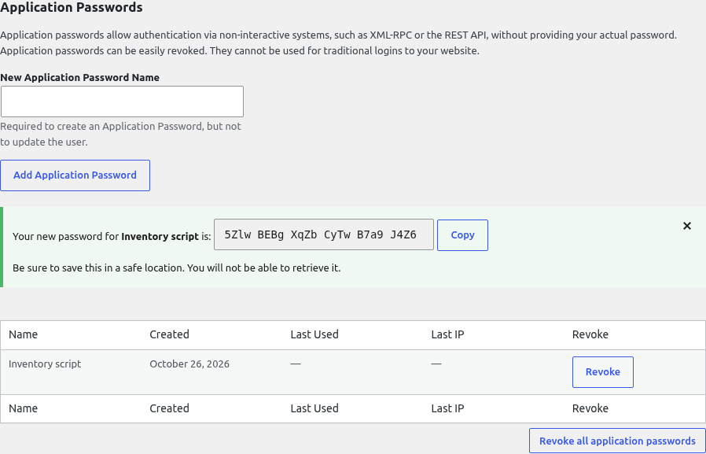
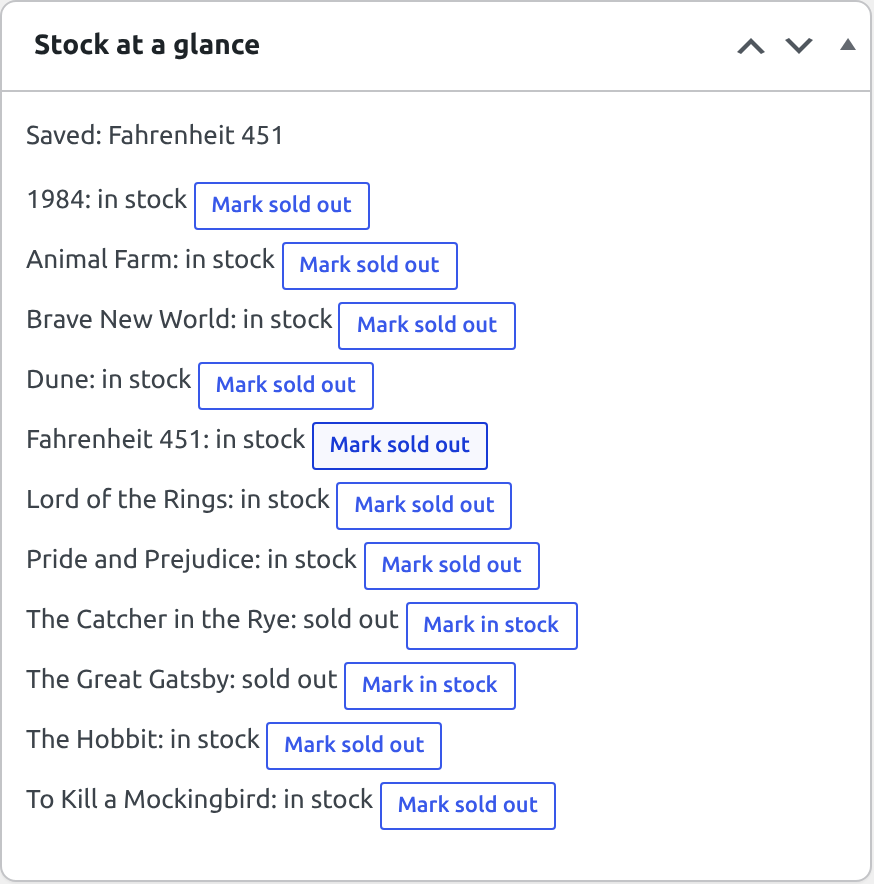

🌐 Lesson 7.1: Using the REST API
Every page of the Pages & Co. site so far is HTML, made for a person with a browser. But the block editor, a phone app, the shop's inventory system or a partner's website do not want HTML: they want the data, in a form a program can read, and a safe way to change it. That is the WordPress REST API. It has been answering at /wp-json/ on your site all along (the editor used it in Lesson 6.3 without asking you). Today you read the shop's catalog through it, learn the two ways a request proves who sent it, and build a dashboard widget that changes stock with a click, without a page load.
🎯 Learning Objectives
By the end of this lesson, you will be able to:
- Explain routes, endpoints, methods, JSON responses and status codes, and list the routes your site offers
- Read the catalog from core endpoints and shape the answer with
_fields,_embed,context, filters and the pagination headers - Authenticate the right way: cookie plus nonce for logged-in JavaScript, application passwords for other programs
- Call the REST API from JavaScript with
apiFetch, and handle its errors - Read REST errors (400, 401, 403, 404) and tell "who are you?" from "you may not"
In This Lesson
🛎️ The Shop's Service Counter
A REST API is a set of addresses (URLs) that return data instead of pages, plus a few rules for using them. WordPress has shipped one in core since version 4.7, and the block editor is built on it: every time you saved a post in Module 6, the editor sent your blocks to the REST API, not to an old-style form. Five words cover most of it:
| Word | Means | On your site |
|---|---|---|
| Base | where the API lives | http://localhost:8080/wp-json/ |
| Namespace | a group of routes, with a version | wp/v2 (core content), pagesco/v1 (yours, from Lesson 7.2) |
| Route | a path pattern under the base | /wp/v2/books, /wp/v2/books/(?P<id>[\d]+) |
| Endpoint | a route plus an HTTP method: one thing you can do | GET /wp/v2/books/30 reads Dune; POST /wp/v2/books/30 updates it |
| Response | JSON, a status code and headers | 200 OK, X-WP-Total: 11, {"id":30,…} |
The methods carry the meaning, as in any REST API: GET reads, POST creates (and, in WordPress, also updates), PUT and PATCH update, DELETE deletes. Every request goes through the same steps inside WordPress:
💡 Mental model: the service counter
The shop floor is the website: customers wander, browse and read the shelves (HTML). At the back is a service counter with a list of what it handles ("ask for a book by its number", "change a price"). Anyone may ask the counter for public information; for anything that changes the shop, the clerk first checks who you are (authentication) and then whether your role allows it (permission). What you get back is a neat package (JSON) with a slip stapled to it: the status code and the headers. Lesson 7.2 adds counters of the shop's own.
Ask the API about itself
The base URL describes the site and lists its namespaces. Open http://localhost:8080/wp-json/ in your browser (Firefox and Chrome show JSON readably); three of its fields:
http://localhost:8080/wp-json/ (the fields name, url and namespaces)Output
{
"name": "Pages & Co.",
"url": "http://localhost:8080",
"namespaces": [
"oembed/1.0",
"wp/v2",
"wp-site-health/v1",
"wp-block-editor/v1",
"wp-abilities/v1"
]
}The name arrives HTML-escaped, as it is stored (Lesson 1.2). The namespaces are core's: content (wp/v2), oEmbed, Site Health, the block editor's helpers and the Abilities API. The full answer also lists every route with its arguments, which makes it long; the server can list the routes for one subject more readably. From the WP-CLI container:
wp eval 'foreach ( array_keys( rest_get_server()->get_routes() ) as $route ) { if ( str_contains( $route, "books" ) || str_contains( $route, "genres" ) ) { echo $route, "\n"; } }'Output
/wp/v2/books
/wp/v2/books/(?P<id>[\d]+)
/wp/v2/books/(?P<id>[\d]+)/autosaves
/wp/v2/books/(?P<parent>[\d]+)/autosaves/(?P<id>[\d]+)
/wp/v2/genres
/wp/v2/genres/(?P<id>[\d]+)These exist because Lesson 5.2 registered the Book post type and the Genre taxonomy with show_in_rest and rest_base: WordPress built the routes, their arguments and their permission checks for you. (?P<id>[\d]+) is a regular expression with a named group: the route matches /wp/v2/books/30 and hands the controller id = 30. (Autosaves are the editor's.) Every page of the site also tells programs where the API is, in its <head>:
curl -s http://localhost:8080/ | grep -o '<link rel="https://api.w.org/"[^>]*>'Output
<link rel="https://api.w.org/" href="http://localhost:8080/wp-json/" />With plain permalinks (no /%postname%/, Lesson 1.2) /wp-json/ does not exist; the same API answers at /?rest_route=/wp/v2/books. That form works on every site, which is why code should build URLs with rest_url( 'wp/v2/books' ) in PHP rather than typing /wp-json/:
http://localhost:8080/?rest_route=/wp/v2/books/30&_fields=id,slugOutput
{"id":30,"slug":"dune"}📚 Reading the Catalog
The collection route lists books. Ask it from the WP-CLI container, keeping the headers and the size of the body (the body goes to a file):
curl -s -D - -o books.json http://localhost:8080/wp-json/wp/v2/books | grep -E '^(HTTP|Link|X-WP-)'
wc -c < books.json
rm books.jsonOutput
HTTP/1.1 200 OK
Link: <http://localhost:8080/wp-json/wp/v2/books?page=2>; rel="next"
X-WP-Total: 11
X-WP-TotalPages: 2
13202Ten books (the default page size) in over 13 KB, and the headers say there are 11 in all, on 2 pages, with a Link to the next page. One book, with the fields this lesson cares about picked out (your browser shows more: dates, guid, excerpt, template, class_list…):
http://localhost:8080/wp-json/wp/v2/books/30Output
{
"id": 30,
"slug": "dune",
"status": "publish",
"type": "book",
"link": "http://localhost:8080/books/dune/",
"title": {
"rendered": "Dune"
},
"content": {
"rendered": "",
"protected": false
},
"meta": {
"pagesco_author": "Frank Herbert",
"pagesco_price": 14.99,
"pagesco_pages": 412,
"pagesco_published": "1965-08-01",
"pagesco_in_stock": true,
"pagesco_isbn": ""
},
"genres": [
5,
6
],
"_links": {
"wp:term": [
{
"taxonomy": "genre",
"embeddable": true,
"href": "http://localhost:8080/wp-json/wp/v2/genres?post=30"
}
]
}
}title.renderedis the title after the display filters (the_title, Lesson 2.3), ready for HTML. Editors get arawversion too, as you will see.metaholds the six keys Lesson 5.2 registered withshow_in_rest, in their registered types: the price is a number, the stock a realtrue. Unregistered or protected (_) keys never appear.genresare term IDs (Fiction 5, Science Fiction 6), not names: the REST API links resources rather than copying them._linkspoints to related resources, here the book's genres. You can ask the server to include them (embed), below.
Ask for less: _fields
Most clients need a few fields. _fields takes a comma-separated list, with dots for nested fields, and the server leaves the rest out (it even skips computing most of them):
http://localhost:8080/wp-json/wp/v2/books?_fields=id,title.rendered,meta.pagesco_price&per_page=3Output
[
{
"id": 40,
"title": {
"rendered": "Animal Farm"
},
"meta": {
"pagesco_price": 8.49
}
},
{
"id": 39,
"title": {
"rendered": "Fahrenheit 451"
},
"meta": {
"pagesco_price": 10.49
}
},
{
"id": 38,
"title": {
"rendered": "Lord of the Rings"
},
"meta": {
"pagesco_price": 15.99
}
}
]The newest three first: collections are ordered by date, newest first, unless you say otherwise. These are the query parameters of a post-type collection you will use most:
| Parameter | Does | Example |
|---|---|---|
per_page, page | page size (1 to 100, default 10) and page number | ?per_page=4&page=2 |
orderby, order | sort: date, title, id, slug, modified, include… and asc/desc | ?orderby=title&order=asc |
search | words in the title, content or excerpt | ?search=hobbit |
slug, include, exclude | particular posts | ?slug=dune |
genres (the taxonomy's rest_base) | books with these term IDs | ?genres=8 |
status | other statuses than publish (authenticated only) | ?status=draft |
context | view (default), embed (fewer fields), edit (raw values, needs permission) | ?context=edit |
_fields, _embed | which fields; include linked resources | ?_embed=wp:term |
Filtering by genre takes the term's ID, so a client first reads the genres (with their counts), then asks for the fantasy books:
http://localhost:8080/wp-json/wp/v2/genres?_fields=id,name,slug,countOutput
[
{
"id": 7,
"count": 6,
"name": "Classic",
"slug": "classic"
},
{
"id": 9,
"count": 3,
"name": "Dystopian",
"slug": "dystopian"
},
{
"id": 8,
"count": 2,
"name": "Fantasy",
"slug": "fantasy"
},
{
"id": 5,
"count": 11,
"name": "Fiction",
"slug": "fiction"
},
{
"id": 6,
"count": 3,
"name": "Science Fiction",
"slug": "science-fiction"
}
]http://localhost:8080/wp-json/wp/v2/books?genres=8&orderby=title&order=asc&_fields=id,title.renderedOutput
[
{
"id": 38,
"title": {
"rendered": "Lord of the Rings"
}
},
{
"id": 35,
"title": {
"rendered": "The Hobbit"
}
}
]Pages of results
A collection never returns everything at once: the most is 100 per request. The totals travel in headers, so the body stays a plain list. Page 2 of the catalog in pages of 4:
http://localhost:8080/wp-json/wp/v2/books?per_page=4&page=2&_fields=id (status line, three headers, body)Output
HTTP/1.1 200 OK
Link: <http://localhost:8080/wp-json/wp/v2/books?per_page=4&page=1&_fields=id>; rel="prev", <http://localhost:8080/wp-json/wp/v2/books?per_page=4&page=3&_fields=id>; rel="next"
X-WP-Total: 11
X-WP-TotalPages: 3
[{"id":36},{"id":35},{"id":34},{"id":33}]X-WP-Total counts the matching books, X-WP-TotalPages the pages at this per_page, and Link carries ready-made URLs for the previous and next pages (a standard header, RFC 8288). A client that wants the whole catalog reads page 1, then loops up to X-WP-TotalPages (Exercise 1).
Include related resources: _embed
To show genre names, a client would need a second request to every wp:term link. _embed makes the server do it and put the results under _embedded; _embed=wp:term embeds only that relation. The embedded genres are long objects, so a few lines of PHP (the WP-CLI container has PHP, of course) print only their names: wp:term holds one list per taxonomy, and the book has one taxonomy.
curl -s 'http://localhost:8080/wp-json/wp/v2/books/30?_embed=wp:term&_fields=id,_links,_embedded' | php -r '$book = json_decode( stream_get_contents( STDIN ), true ); foreach ( $book["_embedded"]["wp:term"][0] as $term ) { echo $term["name"], "\n"; }'Output
Fiction
Science FictionNotice _links and _embedded in _fields: embedding works through the links, so a field list without them embeds nothing (Common Mistake 1).
🔐 Who Is Asking? Authentication
Everything so far was anonymous, and public data is public: the same books anyone sees on the site. Now try to change something. Put Dune on sale with a POST carrying JSON:
curl -s -X POST -H 'Content-Type: application/json' -d '{"meta":{"pagesco_price":12.99}}' http://localhost:8080/wp-json/wp/v2/books/30Output
{"code":"rest_cannot_edit","message":"Sorry, you are not allowed to edit this post.","data":{"status":401}}Refused, with status 401 (Unauthorized): the counter does not know who you are. A request proves its sender in one of three ways:
| Method | Who uses it | How it travels |
|---|---|---|
| Cookie + nonce | JavaScript on the site's own pages, for the logged-in user (the editor, your widget) | the browser's login cookie, plus the header X-WP-Nonce |
| Application password | other programs: scripts, apps, other servers, the WP-CLI container | HTTP Basic authentication, Authorization: Basic …, over HTTPS |
| Plugins (OAuth 2, JWT) | larger integrations with token flows | whatever the plugin defines; not in core |
Cookie + nonce
When you log in, WordPress gives your browser a wordpress_logged_in_… cookie, and the browser sends it with every request to the site. That is exactly the danger Lesson 5.3 called CSRF: a page on another site can make your browser send a request to your shop, cookie included. So on REST requests WordPress ignores the cookie unless the request also carries a nonce for the action wp_rest, which only pages of your own site can know. You can watch the rule work with curl, from the WP-CLI container: log in as Maria into a cookie file (as Lesson 5.4's pagesco-save.sh did), ask "who am I?" without and with a nonce, and once with a made-up one. admin-ajax.php?action=rest-nonce is the address core's JavaScript uses to fetch a fresh nonce:
curl -s -o /dev/null -c jar.txt http://localhost:8080/wp-login.php
curl -s -o /dev/null -b jar.txt -c jar.txt --data-urlencode log=maria --data-urlencode pwd=maria-pass -d testcookie=1 http://localhost:8080/wp-login.php
curl -s -b jar.txt 'http://localhost:8080/wp-json/wp/v2/users/me?_fields=id,name'; echo
NONCE=$(curl -s -b jar.txt 'http://localhost:8080/wp-admin/admin-ajax.php?action=rest-nonce')
curl -s -b jar.txt -H "X-WP-Nonce: $NONCE" 'http://localhost:8080/wp-json/wp/v2/users/me?_fields=id,name'; echo
curl -s -b jar.txt -H 'X-WP-Nonce: 0123456789' 'http://localhost:8080/wp-json/wp/v2/users/me?_fields=id,name'; echo
rm jar.txtOutput
{"code":"rest_not_logged_in","message":"You are not currently logged in.","data":{"status":401}}
{"id":2,"name":"Maria Lopez"}
{"code":"rest_cookie_invalid_nonce","message":"Cookie check failed","data":{"status":403}}Three answers, three lessons. With only the cookie, the API treats the request as anonymous: rest_not_logged_in, although Maria is logged in. With the right nonce, the same cookie is accepted and /users/me answers with Maria. With a wrong nonce, WordPress does not quietly fall back to anonymous; it says rest_cookie_invalid_nonce, 403, so a stale page knows it must fetch a new one. Nonces are tied to the user's login session and live 12 to 24 hours. Delete the cookie file (the last command): it is as good as Maria's login while it exists.
On a real page you never fetch nonces by hand. WordPress prints one for the logged-in user whenever a script that uses apiFetch is on the page (next section). Older code does the same by hand with wp_localize_script( 'handle', 'wpApiSettings', array( 'root' => esc_url_raw( rest_url() ), 'nonce' => wp_create_nonce( 'wp_rest' ) ) ) and an X-WP-Nonce header in fetch(); it still works.
Application passwords
The shop's inventory system is a script on another machine: it has no browser and no cookie, and it should never know Maria's real password. For programs, WordPress has application passwords: 24-character passwords that a user creates per application, that only work for API requests (never for wp-login.php), are stored hashed, record when and from where they were last used, and can be revoked one by one. In the admin they are at the bottom of Users > Profile: type a name under New Application Password Name, click Add Application Password, and copy the password from the notice, which shows it once.

Or with WP-CLI, for Maria, whose role (Editor) can change any book but cannot install plugins or manage users: give a program the smallest role that does its job.
wp user application-password create maria "Inventory script" --porcelainOutput (your password will differ)
kcheayM59M0WGgUgbF3YvlOw--porcelain prints only the password. Keep it in your password manager, never in a file under wordpress/, which the web server would happily hand to anyone who guesses the name. For the commands in this lesson, put it into a shell variable in the WP-CLI container (spaces, as the admin screen shows them, are allowed: WordPress removes them):
PASS='paste the 24 characters here'curl --user "maria:$PASS" sends the user name and the application password with HTTP Basic authentication. Who am I now, and the sale that was refused a moment ago:
curl -s --user "maria:$PASS" 'http://localhost:8080/wp-json/wp/v2/users/me?_fields=id,name'Output
{"id":2,"name":"Maria Lopez"}curl -s --user "maria:$PASS" -X POST -H 'Content-Type: application/json' -d '{"meta":{"pagesco_price":12.99}}' 'http://localhost:8080/wp-json/wp/v2/books/30?_fields=id,meta.pagesco_price'Output
{"id":30,"meta":{"pagesco_price":12.99}}The answer to a successful update is the updated book (here only the fields you asked for). The REST API ran the same checks the edit screen runs: Maria may edit book 30, the meta key is registered, and the value has the registered type. Dune's page follows at once, through Lesson 6.3's binding:
curl -s http://localhost:8080/books/dune/ | grep -o 'has-large-font-size wp-block-paragraph">[^<]*'Output
has-large-font-size wp-block-paragraph">$12.99The sale is over; put the price back:
curl -s --user "maria:$PASS" -X POST -H 'Content-Type: application/json' -d '{"meta":{"pagesco_price":14.99}}' 'http://localhost:8080/wp-json/wp/v2/books/30?_fields=id,meta.pagesco_price'Output
{"id":30,"meta":{"pagesco_price":14.99}}🛑 Basic authentication needs HTTPS
Basic authentication only encodes the user name and password (Base64), it does not encrypt them: on plain HTTP anyone on the network path can read them. WordPress therefore offers application passwords only on HTTPS sites, or where WP_ENVIRONMENT_TYPE is local, as on your Docker site. On a live site, HTTPS is not optional (Lesson 8.4), and a program's password is revoked the moment the program is retired or a laptop is lost: Revoke on the profile screen, or wp user application-password delete.
🧩 Version note: application passwords and old tutorials
Application passwords arrived in core in WordPress 5.6. Tutorials from before that install the "Basic Auth" plugin, which sends the account's real password with every request, or a JWT plugin. On 5.6 and later neither is needed for scripts and apps; if you inherit a site with the Basic Auth plugin, replace it with application passwords.
🧰 apiFetch: the REST API from JavaScript
In the browser, JavaScript could call fetch() and add the nonce itself. WordPress ships a small wrapper that does the bookkeeping: @wordpress/api-fetch, the same one the block editor and @wordpress/core-data use. It prefixes the API's root URL, adds the nonce and the user's language (_locale=user), sends data as JSON, parses the response, and when the server says no, rejects with the server's error object. It even fetches a new nonce and retries when the old one has expired. In a script you build with wp-scripts (Module 6) you write import apiFetch from '@wordpress/api-fetch';, and the build turns it into the global wp.apiFetch plus a dependency wp-api-fetch in index.asset.php. A plain script without a build uses the global and names the dependency itself.
When a page loads the wp-api-fetch script, WordPress prints its setup right after it, with a nonce for the user who is viewing the page. The Dashboard loads it already (core's own features use it); in Maria's Dashboard source:
http://localhost:8080/wp-admin/ (logged in as maria; View Source, search for wp-api-fetch-js-after)Output (your nonce will differ)
<script id="wp-api-fetch-js-after">
wp.apiFetch.use( wp.apiFetch.createRootURLMiddleware( "http://localhost:8080/wp-json/" ) );
wp.apiFetch.nonceMiddleware = wp.apiFetch.createNonceMiddleware( "af9403b2d7" );
wp.apiFetch.use( wp.apiFetch.nonceMiddleware );
wp.apiFetch.use( wp.apiFetch.mediaUploadMiddleware );
wp.apiFetch.nonceEndpoint = "http://localhost:8080/wp-admin/admin-ajax.php?action=rest-nonce";
//# sourceURL=wp-api-fetch-js-after
</script>The root URL middleware, the nonce middleware with this page's nonce, and nonceEndpoint, the rest-nonce address you used with curl, for refreshing it. Your code only says what it wants:
// Read: GET is the default; path is relative to /wp-json/.
const books = await wp.apiFetch( { path: '/wp/v2/books?_fields=id,title&per_page=100' } );
// Write: method and data (sent as JSON); the answer is the updated book.
const book = await wp.apiFetch( {
path: '/wp/v2/books/33',
method: 'POST',
data: { meta: { pagesco_in_stock: true } },
} );
// Errors: a rejected promise carrying the server's JSON error.
try {
await wp.apiFetch( { path: '/wp/v2/books/99' } );
} catch ( error ) {
console.log( error.code, error.message, error.data.status ); // rest_post_invalid_id Invalid post ID. 404
}| Option | Does |
|---|---|
path | the route and query, relative to the API root: /wp/v2/books?per_page=5 |
url | a full URL instead (no root prefix), for example another site's API |
method | GET (default), POST, PUT, DELETE… |
data | an object sent as the JSON body |
parse: false | resolve with the raw Response, to read headers such as X-WP-Total (and, on errors, reject with it unparsed) |
The project's widget uses all of this. On the front end the same setup is printed when a front-end script depends on wp-api-fetch; for a visitor who is not logged in the nonce simply belongs to "nobody", and public GET requests work as with curl. Script modules (Lesson 6.4's view.js) cannot load wp-api-fetch, which is a classic script; for public data they use plain fetch(), as Lesson 7.2 shows.
🚦 When the Answer Is No: REST Errors
Every REST error has the same shape: a machine-readable code, a human message, and data with the HTTP status. Validation errors add which parameters failed and why. Ask for too many books:
http://localhost:8080/wp-json/wp/v2/books?per_page=500Output
HTTP/1.1 400 Bad Request
{
"code": "rest_invalid_param",
"message": "Invalid parameter(s): per_page",
"data": {
"status": 400,
"params": {
"per_page": "per_page must be between 1 (inclusive) and 100 (inclusive)"
},
"details": {
"per_page": {
"code": "rest_out_of_bounds",
"message": "per_page must be between 1 (inclusive) and 100 (inclusive)",
"data": null
}
}
}
}Every argument of a route has a schema (type, minimum, maximum, allowed values), and WordPress checks requests against it before any code of the controller runs. The shop's most wanted query fails the same way, because the core route only knows its own sort orders:
http://localhost:8080/wp-json/wp/v2/books?orderby=priceOutput
{
"code": "rest_invalid_param",
"message": "Invalid parameter(s): orderby",
"data": {
"status": 400,
"params": {
"orderby": "orderby is not one of author, date, id, include, modified, parent, relevance, slug, include_slugs, and title."
},
"details": {
"orderby": {
"code": "rest_not_in_enum",
"message": "orderby is not one of author, date, id, include, modified, parent, relevance, slug, include_slugs, and title.",
"data": null
}
}
}
}Remember that one: books by price, by genre slug, only in stock, in a compact shape, is exactly what Lesson 7.2's own endpoint will offer. Now the two refusals that are about people. Devon is an author. Give him an application password the same way (wp user application-password create devon "Test" --porcelain, into a variable DEVON_PASS), and let him try to change a book he does not own:
curl -s --user "devon:$DEVON_PASS" -X POST -H 'Content-Type: application/json' -d '{"meta":{"pagesco_price":1}}' http://localhost:8080/wp-json/wp/v2/books/30Output
{"code":"rest_cannot_edit","message":"Sorry, you are not allowed to edit this post.","data":{"status":403}}The same code as the anonymous attempt, rest_cannot_edit, but status 403 (Forbidden) instead of 401. That difference is the most useful thing in an error:
| Status | Means | Typical codes | Check |
|---|---|---|---|
400 Bad Request | the request itself is wrong | rest_invalid_param, rest_missing_callback_param | data.params: which argument, and why |
401 Unauthorized | "who are you?": not authenticated | rest_not_logged_in, rest_cannot_edit, rest_forbidden_context | the nonce, the --user, the application password |
403 Forbidden | "I know you, and no" | rest_cannot_edit, rest_cookie_invalid_nonce | the user's role and capabilities (Lesson 5.3) |
404 Not Found | no such route, or no such item | rest_no_route, rest_post_invalid_id | the spelling of the route, the ID |
500 | the server failed | a PHP error, or an error without a status (Lesson 7.2) | debug.log |
Two 404s, one for a misspelled route and one for a book that does not exist:
curl -s http://localhost:8080/wp-json/wp/v2/bookz; echo
curl -s http://localhost:8080/wp-json/wp/v2/books/99; echoOutput
{"code":"rest_no_route","message":"No route was found matching the URL and request method.","data":{"status":404}}
{"code":"rest_post_invalid_id","message":"Invalid post ID.","data":{"status":404}}And context=edit, which returns raw values (the unfiltered title, the content as block markup) only to users who could edit the item:
curl -s 'http://localhost:8080/wp-json/wp/v2/books/30?context=edit'; echoOutput
{"code":"rest_forbidden_context","message":"Sorry, you are not allowed to edit this post.","data":{"status":401}}⚠️ Common Mistakes
1. _fields without _links, and _embed embeds nothing
A tidy field list, the genres to embed, and a count of how often _embedded appears in the answer:
curl -s 'http://localhost:8080/wp-json/wp/v2/books/30?_embed=wp:term&_fields=id,title' | grep -c '_embedded'Output
0What it means: no error, no embedded genres, and grep -c counts 0 (and exits with status 1). _fields is applied to the response, and since 5.4 WordPress only embeds links that survive it: without _links in the list there is nothing to follow, and without _embedded the result would be cut off anyway. Fix: _fields=id,title,_links,_embedded, as in Reading the Catalog.
2. fetch() without the nonce
A widget's first draft often uses the browser's own fetch(). Logged in as Maria on the Dashboard, type both versions into the developer tools' Console and compare. Recorded with Playwright in Chromium on a WordPress 7.1 site built by this lesson (each answer as JSON, and what the Network panel showed for the two requests):
> await ( await fetch( '/wp-json/wp/v2/users/me?_fields=id,name' ) ).json()
{"code":"rest_not_logged_in","message":"You are not currently logged in.","data":{"status":401}}
> await wp.apiFetch( { path: '/wp/v2/users/me?_fields=id,name' } )
{"id":2,"name":"Maria Lopez"}
Network: GET /wp-json/wp/v2/users/me?_fields=id,name no X-WP-Nonce header 401
GET /wp-json/wp/v2/users/me?_fields=id%2Cname&_locale=user X-WP-Nonce header 200What it means: the browser did send Maria's cookie, and WordPress, finding no nonce, treated the request as anonymous: "You are not currently logged in." on a screen where she plainly is. apiFetch added the nonce from the page's setup and got her answer. Fix: use wp.apiFetch (or send X-WP-Nonce yourself) for every request that needs the user; and when an API says "not logged in" while you are, check the nonce before anything else.
3. The account password instead of an application password
Maria's login password works on wp-login.php, so it seems natural to give it to curl:
curl -s --user 'maria:maria-pass' 'http://localhost:8080/wp-json/wp/v2/users/me?_fields=id,name'; echoOutput
{"code":"rest_not_logged_in","message":"You are not currently logged in.","data":{"status":401}}What it means: Basic authentication on the REST API accepts application passwords only; the account password is rejected, and on this site the API answers as if no credentials were sent at all. A mistyped, revoked or copied-with-a-missing-character application password gets exactly the same answer, which is deliberate: the API does not help a guesser by saying which part was wrong. Fix: create an application password for the program, and when you get rest_not_logged_in with --user, check the password (Users > Profile shows whether it was ever used: Last Used).
🛠️ Project: Stock at a Glance
The booksellers want two things: the inventory script should mark books sold out the moment the last copy is sold, and on the Dashboard they want the whole catalog's stock with a button per book, without opening eleven edit screens. You already have the script's credentials; now you use them, then build the widget as a feature of the plugin. Allow about 40 minutes.
🛠️ Step 1: The inventory script sells the last copy (8 min)
A customer buys the last Fahrenheit 451 (book 39). The inventory system sends what any program would, with Maria's "Inventory script" password from the WP-CLI container:
curl -s --user "maria:$PASS" -X POST -H 'Content-Type: application/json' -d '{"meta":{"pagesco_in_stock":false}}' 'http://localhost:8080/wp-json/wp/v2/books/39?_fields=id,title.rendered,meta.pagesco_in_stock'Output
{"id":39,"title":{"rendered":"Fahrenheit 451"},"meta":{"pagesco_in_stock":false}}The book's page (Lesson 6.3's facts list) says so at once:
http://localhost:8080/books/fahrenheit-451/ (View Source: the first fact)Output
<li>Sold out</li>A delivery arrives the same afternoon, and the script puts the book back:
curl -s --user "maria:$PASS" -X POST -H 'Content-Type: application/json' -d '{"meta":{"pagesco_in_stock":true}}' 'http://localhost:8080/wp-json/wp/v2/books/39?_fields=id,title.rendered,meta.pagesco_in_stock'Output
{"id":39,"title":{"rendered":"Fahrenheit 451"},"meta":{"pagesco_in_stock":true}}Two requests, and the shop's pages, the Book List and the Find a Book page followed each time, because they all read the meta when they render. That is the point of keeping data in one place.
🛠️ Step 2: The widget as a feature (12 min)
A dashboard widget is two hooks: wp_dashboard_setup to add it with wp_add_dashboard_widget(), and admin_enqueue_scripts to load its script on the Dashboard only (Lesson 4.3's enqueueing, with the hook suffix check from Lesson 5.4's exercises). The widget prints an empty frame; the script fills it. Create wordpress/wp-content/plugins/pagesco-books/src/Admin/StockWidget.php:
<?php
/**
* The "Stock at a glance" dashboard widget.
*
* @package PagesCo\Books
*/
namespace PagesCo\Books\Admin;
use PagesCo\Books\Feature;
/**
* Adds a dashboard widget that lists the books and switches their stock through the REST API.
*/
final class StockWidget implements Feature {
/**
* The widget's ID, which is also its script's handle.
*/
public const HANDLE = 'pagesco-stock-widget';
/**
* Hooks the widget and its script.
*/
public function register(): void {
add_action( 'wp_dashboard_setup', array( $this, 'add_widget' ) );
add_action( 'admin_enqueue_scripts', array( $this, 'enqueue' ) );
}
/**
* Who sees the widget: users who may edit everyone's books (editors and administrators).
*/
private function can_use(): bool {
return current_user_can( 'edit_others_posts' );
}
/**
* Adds the widget to the Dashboard.
*/
public function add_widget(): void {
if ( ! $this->can_use() ) {
return;
}
wp_add_dashboard_widget( self::HANDLE, __( 'Stock at a glance', 'pagesco-books' ), array( $this, 'render' ) );
}
/**
* Prints the widget's frame; the script fills the list.
*/
public function render(): void {
?>
<p class="pagesco-stock-widget__status" aria-live="polite"><?php esc_html_e( 'Loading the catalog…', 'pagesco-books' ); ?></p>
<ul class="pagesco-stock-widget__books"></ul>
<?php
}
/**
* Loads the script on the Dashboard only.
*
* @param string $hook_suffix The current admin screen.
*/
public function enqueue( $hook_suffix ): void {
if ( 'index.php' !== $hook_suffix || ! $this->can_use() ) {
return;
}
wp_enqueue_script(
self::HANDLE,
plugins_url( 'assets/js/stock-widget.js', PAGESCO_BOOKS_FILE ),
array( 'wp-api-fetch', 'wp-i18n' ),
PAGESCO_BOOKS_VERSION,
array( 'in_footer' => true )
);
wp_set_script_translations( self::HANDLE, 'pagesco-books' );
}
}- The capability check decides who sees the widget. It is a convenience, not the protection: every request the script sends is checked again by the REST API, book by book, exactly as Devon's attempt was.
- The dependencies
wp-api-fetchandwp-i18nmake WordPress load both before the script and print the nonce setup you saw.wp_set_script_translations()connects the script's strings to thepagesco-bookstranslations (Lesson 8.3 produces them). - The widget ID becomes the
idof the widget's box on the Dashboard, which is how the script finds it.
Add the feature after BookBindings in Plugin::feature_classes() (in your editor; here with sed):
sed -i '/\t\t\tBookBindings::class,/a\ Admin\\StockWidget::class,' wp-content/plugins/pagesco-books/src/Plugin.php
grep -n -A 1 'BookBindings::class' wp-content/plugins/pagesco-books/src/Plugin.phpOutput
89: BookBindings::class,
90- Admin\StockWidget::class,🛠️ Step 3: The script (12 min)
Plain JavaScript in a new folder, no build step: everything it needs, WordPress provides. Create wordpress/wp-content/plugins/pagesco-books/assets/js/stock-widget.js:
/**
* Stock at a glance: lists the books and switches their stock, through the REST API.
*
* Plain JavaScript, no build step: wp.apiFetch and wp.i18n come from WordPress
* (the script's dependencies), and apiFetch sends the REST nonce for the logged-in user.
*/
( function () {
const { __, sprintf } = wp.i18n;
const widget = document.getElementById( 'pagesco-stock-widget' );
if ( ! widget ) {
return;
}
const status = widget.querySelector( '.pagesco-stock-widget__status' );
const list = widget.querySelector( '.pagesco-stock-widget__books' );
// One line per book: its title and stock, and a button that switches the stock.
function bookItem( book ) {
const item = document.createElement( 'li' );
const label = document.createElement( 'span' );
const button = document.createElement( 'button' );
label.textContent = book.meta.pagesco_in_stock
? /* translators: %s: book title. */ sprintf( __( '%s: in stock', 'pagesco-books' ), book.title.raw )
: /* translators: %s: book title. */ sprintf( __( '%s: sold out', 'pagesco-books' ), book.title.raw );
button.type = 'button';
button.className = 'button button-small';
button.textContent = book.meta.pagesco_in_stock
? __( 'Mark sold out', 'pagesco-books' )
: __( 'Mark in stock', 'pagesco-books' );
button.addEventListener( 'click', () => switchStock( book, item, button ) );
item.append( label, ' ', button );
return item;
}
// POST /wp/v2/books/<id> with the opposite stock; the answer is the updated book.
async function switchStock( book, item, button ) {
button.disabled = true;
try {
const updated = await wp.apiFetch( {
path: `/wp/v2/books/${ book.id }?context=edit&_fields=id,title,meta`,
method: 'POST',
data: { meta: { pagesco_in_stock: ! book.meta.pagesco_in_stock } },
} );
item.replaceWith( bookItem( updated ) );
/* translators: %s: book title. */
status.textContent = sprintf( __( 'Saved: %s', 'pagesco-books' ), updated.title.raw );
} catch ( error ) {
status.textContent = error.message;
button.disabled = false;
}
}
// GET the catalog, sorted by title, with only the fields the widget needs.
wp.apiFetch( {
path: '/wp/v2/books?per_page=100&orderby=title&order=asc&context=edit&_fields=id,title,meta',
} )
.then( ( books ) => {
list.replaceChildren( ...books.map( bookItem ) );
/* translators: %d: number of books. */
status.textContent = sprintf( __( '%d books in the catalog.', 'pagesco-books' ), books.length );
} )
.catch( ( error ) => {
status.textContent = error.message;
} );
} )();context=editreturnstitle.raw, the title exactly as typed.title.renderedis HTML (an apostrophe arrives as’), and putting HTML intotextContentwould print the entity literally.textContent, neverinnerHTML, for anything that came from the API: the JavaScript version of "escape late" (Lesson 5.3). A title with<script>in it shows as text.- The status line has
aria-live="polite", so screen readers announce "Saved: The Great Gatsby"; the button is disabled while its request runs, so a double click sends one request. - Errors are the server's: if Maria loses her role while the Dashboard is open, the next click shows "Sorry, you are not allowed to edit this post."
per_page=100is the maximum; a catalog of more than 100 books would readX-WP-TotalPagesand fetch the other pages, or use Lesson 7.2's endpoint.
🛠️ Step 4: Try it as a bookseller (8 min)
Log in as Maria and open the Dashboard. The widget's frame comes from PHP, and the script tag from the enqueue, with the plugin's version for cache busting:
http://localhost:8080/wp-admin/ (logged in as maria; View Source: the widget's content)Output
<div class="inside">
<p class="pagesco-stock-widget__status" aria-live="polite">Loading the catalog…</p>
<ul class="pagesco-stock-widget__books"></ul>
</div>http://localhost:8080/wp-admin/ (View Source: the script tag)Output
<script id="pagesco-stock-widget-js" src="http://localhost:8080/wp-content/plugins/pagesco-books/assets/js/stock-widget.js?ver=1.0.0"></script>In the browser, the list appears a moment after the page. With the developer tools' Network panel open (filter: Fetch/XHR), click Mark in stock next to The Great Gatsby, then Mark sold out on the same line (the shop has no copies; you were testing). Recorded with Playwright in Chromium on a WordPress 7.1 site built by this lesson:
Loaded 11 books in the catalog.
1984: in stock [Mark sold out] … The Catcher in the Rye: sold out [Mark in stock]
The Great Gatsby: sold out [Mark in stock] … (eleven lines)
Clicked Gatsby Saved: The Great Gatsby The Great Gatsby: in stock [Mark sold out] (database: true)
Clicked again Saved: The Great Gatsby The Great Gatsby: sold out [Mark in stock] (database: false)
Network (Fetch/XHR):
GET /wp-json/wp/v2/books?per_page=100&orderby=title&order=asc&context=edit&_fields=id%2Ctitle%2Cmeta&_locale=user X-WP-Nonce
POST /wp-json/wp/v2/books/33?context=edit&_fields=id%2Ctitle%2Cmeta&_locale=user X-WP-Nonce
POST /wp-json/wp/v2/books/33?context=edit&_fields=id%2Ctitle%2Cmeta&_locale=user X-WP-Nonce
Page loads: 1
Console: no errors (only WordPress's own jQuery Migrate and React DevTools notices, which SCRIPT_DEBUG shows)
Check the result from the WP-CLI container, and the plugin's features and files:
wp post meta get 39 pagesco_in_stock
wp eval 'var_dump( (bool) get_post_meta( 33, "pagesco_in_stock", true ) );'
grep -c "::class," wp-content/plugins/pagesco-books/src/Plugin.php
ls wp-content/plugins/pagesco-books/assets/jsOutput
1
bool(false)
15
stock-widget.jsFahrenheit 451 is in stock (1), Gatsby is sold out after your test, the plugin has fifteen features. In pagesco-plan.txt, under a new heading "APIs", note: "Core REST: /wp/v2/books (meta in REST), /wp/v2/genres. Inventory script = application password 'Inventory script' for maria (editor). Dashboard: Stock at a glance (Admin\StockWidget, assets/js/stock-widget.js, apiFetch)."
✅ Project Completion Checklist
- Maria has an application password named "Inventory script", saved outside the
wordpress/folder - The inventory script can mark a book sold out with one
POST, and the book's page shows it Admin\StockWidgetis the plugin's fifteenth feature, andassets/js/stock-widget.jsexists- Maria's Dashboard shows "Stock at a glance" with all eleven books; each button switches the stock without a page load
- Fahrenheit 451 is in stock again, and Gatsby and Catcher in the Rye are sold out, as before the lesson
🏋️ Hands-on Exercises
Run them in the WP-CLI container. Each one leaves the site as the project did. Try each one before you open the solution.
🏋️ Exercise 1: The Whole Catalog, Page by Page
Write a shell loop that reads the catalog in pages of 4 titles, sorted by title: first one request to learn the number of pages, then one request per page, printing each page's titles under a heading such as Page 2:.
💡 Hint
curl -s -I fetches only the headers; grep -i '^X-WP-TotalPages' and tr -dc '0-9' keep the number. seq 1 $PAGES counts. grep -o '"rendered":"[^"]*"' picks the titles out of each page.
✅ Solution
API='http://localhost:8080/wp-json/wp/v2/books?per_page=4&orderby=title&order=asc&_fields=title'
PAGES=$(curl -s -I "$API" | grep -i '^X-WP-TotalPages' | tr -dc '0-9')
for page in $(seq 1 "$PAGES"); do
echo "Page $page:"
curl -s "$API&page=$page" | grep -o '"rendered":"[^"]*"'
doneOutput
Page 1:
"rendered":"1984"
"rendered":"Animal Farm"
"rendered":"Brave New World"
"rendered":"Dune"
Page 2:
"rendered":"Fahrenheit 451"
"rendered":"Lord of the Rings"
"rendered":"Pride and Prejudice"
"rendered":"The Catcher in the Rye"
Page 3:
"rendered":"The Great Gatsby"
"rendered":"The Hobbit"
"rendered":"To Kill a Mockingbird"Three pages for eleven books. A client never assumes it got everything; it reads the headers. (-I sends a HEAD request: the same headers, no body.)
🏋️ Exercise 2: A Draft Round Trip with a Throwaway Password
In one shell session: create an application password "Exercise 2" for Maria into a variable, create a draft book "Emma" (author Jane Austen, $9.49) with it, show that anonymous visitors cannot read the draft while Maria can (with context=edit), delete the draft for good, revoke the password, and show that the password no longer works.
💡 Hint
PASS=$(wp user application-password create … --porcelain). Create with POST /wp/v2/books and a JSON body with title, status and meta; ask for _fields=id and keep the number with grep -o '[0-9]*'. DELETE /wp/v2/books/ID?force=true skips the trash. wp user application-password list maria --name="Exercise 2" --field=uuid finds the password to delete.
✅ Solution
EX_PASS=$(wp user application-password create maria "Exercise 2" --porcelain)
API=http://localhost:8080/wp-json/wp/v2/books
ID=$(curl -s --user "maria:$EX_PASS" -X POST -H 'Content-Type: application/json' -d '{"title":"Emma","status":"draft","meta":{"pagesco_author":"Jane Austen","pagesco_price":9.49}}' "$API?_fields=id" | grep -o '[0-9]*')
curl -s "$API/$ID?_fields=id,status"; echo
curl -s --user "maria:$EX_PASS" "$API/$ID?context=edit&_fields=status,title.raw,meta.pagesco_author"; echo
curl -s --user "maria:$EX_PASS" -X DELETE "$API/$ID?force=true&_fields=deleted"; echo
wp user application-password delete maria "$(wp user application-password list maria --name='Exercise 2' --field=uuid)"
curl -s --user "maria:$EX_PASS" "$API?status=draft&_fields=id"; echoOutput
{"code":"rest_forbidden","message":"Sorry, you are not allowed to do that.","data":{"status":401}}
{"status":"draft","title":{"raw":"Emma"},"meta":{"pagesco_author":"Jane Austen"}}
{"deleted":true}
Success: Deleted 1 of 1 application password.
{"code":"rest_invalid_param","message":"Invalid parameter(s): status","data":{"status":400,"params":{"status":"Status is forbidden."},"details":{"status":{"code":"rest_forbidden_status","message":"Status is forbidden.","data":{"status":401}}}}}The anonymous request gets 401 for the draft: it exists, but you are not allowed to see it, and the API does not even say that it is a draft. Maria sees the raw title and the meta. The delete answers {"deleted":true} (without force=true, books would go to the trash and the answer would be the trashed book). After the revoke, the same password asking for drafts is anonymous again: status is "forbidden". Revoking is instant, which is why one password per program is the rule.
🏋️ Exercise 3: Restock Two Books in One Request
Core has a batch route, POST /wp-json/batch/v1, that runs several requests to routes that allow it (post-type routes do) in one HTTP request. Mark Gatsby (33) and Catcher in the Rye (37) in stock in one batch, look at the answer, then undo it with a second batch.
💡 Hint
The body is {"requests":[{"method":"POST","path":"/wp/v2/books/33?_fields=id,meta.pagesco_in_stock","body":{"meta":{…}}}, …]}. Each request's path starts at the namespace, without /wp-json.
✅ Solution
curl -s --user "maria:$PASS" -X POST -H 'Content-Type: application/json' -d '{"requests":[{"method":"POST","path":"/wp/v2/books/33?_fields=id,meta.pagesco_in_stock","body":{"meta":{"pagesco_in_stock":true}}},{"method":"POST","path":"/wp/v2/books/37?_fields=id,meta.pagesco_in_stock","body":{"meta":{"pagesco_in_stock":true}}}]}' http://localhost:8080/wp-json/batch/v1Output (pretty-printed here)
{
"responses": [
{
"body": {
"id": 33,
"meta": {
"pagesco_in_stock": true
}
},
"status": 200,
"headers": {
"Allow": "GET, POST, PUT, PATCH, DELETE"
}
},
{
"body": {
"id": 37,
"meta": {
"pagesco_in_stock": true
}
},
"status": 200,
"headers": {
"Allow": "GET, POST, PUT, PATCH, DELETE"
}
}
]
}One response per request, each with its own status and headers, in the order sent: a batch is a convenience for the network, not a transaction (one request may fail while the other succeeds; with "validation":"require-all-validate" in the body, nothing runs unless every request validates). The undo:
curl -s --user "maria:$PASS" -X POST -H 'Content-Type: application/json' -d '{"requests":[{"method":"POST","path":"/wp/v2/books/33?_fields=id","body":{"meta":{"pagesco_in_stock":false}}},{"method":"POST","path":"/wp/v2/books/37?_fields=id","body":{"meta":{"pagesco_in_stock":false}}}]}' http://localhost:8080/wp-json/batch/v1Output (pretty-printed here)
{
"responses": [
{
"body": {
"id": 33
},
"status": 200,
"headers": {
"Allow": "GET, POST, PUT, PATCH, DELETE"
}
},
{
"body": {
"id": 37
},
"status": 200,
"headers": {
"Allow": "GET, POST, PUT, PATCH, DELETE"
}
}
]
}🏋️ Exercise 4: Genre Names Without _embed (Stretch)
Every client of /wp/v2/books that shows genres needs _embed or a second request. Add a read-only field genre_names to the book responses with register_rest_field() (in a temporary must-use plugin), check it for Dune, and remove the plugin.
💡 Hint
register_rest_field( 'book', 'genre_names', array( 'get_callback' => …, 'schema' => … ) ) on rest_api_init. The callback receives the prepared response as an array; $data['id'] is the book. wp_get_post_terms( $id, 'genre', array( 'fields' => 'names' ) ) returns the names.
✅ Solution
<?php
/**
* Plugin Name: Exercise: Genre Names in the REST API
*/
add_action(
'rest_api_init',
function () {
register_rest_field(
'book',
'genre_names',
array(
'get_callback' => function ( $data ) {
return wp_get_post_terms( $data['id'], 'genre', array( 'fields' => 'names' ) );
},
'schema' => array(
'description' => 'The names of the book\'s genres.',
'type' => 'array',
'items' => array( 'type' => 'string' ),
'context' => array( 'view', 'edit' ),
'readonly' => true,
),
)
);
}
);http://localhost:8080/wp-json/wp/v2/books/30?_fields=id,genres,genre_namesOutput
{
"id": 30,
"genres": [
5,
6
],
"genre_names": [
"Fiction",
"Science Fiction"
]
}A registered field takes part in everything: _fields, the route's schema (an OPTIONS request lists it), and with an update_callback it could even be written. It is the right tool to extend core's routes for every client; Lesson 7.2 builds routes with a shape of their own. Remove it:
rm wp-content/mu-plugins/exercise-genre-names.php🎯 Quick Quiz
🎯 Check Your Understanding
Question 1: A mobile app needs the IDs and titles of the five newest books, and nothing else. Which request fits best?
Question 2: Logged in as Maria, a script on the Dashboard calls fetch( '/wp-json/wp/v2/books/33', { method: 'POST', … } ) with no other headers. What happens?
Question 3: A partner's server should update prices every night. How should it authenticate?
Question 4: Devon (author) sends a correct application password and tries to change Dune's price. The answer is rest_cannot_edit. Which status does it carry?
Question 5: The catalog has 11 books. What does X-WP-TotalPages say for /wp-json/wp/v2/books?per_page=4&page=1?
❓ Common Questions at This Stage
Should I turn the REST API off for security?
No: the block editor, the Site Editor, many plugins and your own widget run on it, and switching it off breaks them. Secure what it exposes instead. Everything it shows anonymously is public on the site anyway, with one surprise: /wp-json/wp/v2/users lists every user who has published content (on your site admin, Devon and Maria), with their names and slugs. Shops that care hide those through the rest_endpoints filter or a security plugin. The real protection is the same as for forms: capabilities on every change, which core's routes check and Lesson 7.2's permission_callback makes you check.
curl with --user works locally but not on my host: "not logged in". Why?
Some hosts (Apache with PHP as CGI or FastCGI, some proxies) do not pass the Authorization header to PHP. WordPress's own .htaccess block contains a line for exactly this, RewriteRule .* - [E=HTTP_AUTHORIZATION:%{HTTP:Authorization}] (look at wordpress/.htaccess); if your host ignores .htaccess (nginx), its server configuration must pass the header. Also check that the site uses HTTPS, or application passwords are not offered at all.
What about GraphQL, OAuth and JWT?
All three are plugins, not core. WPGraphQL adds a GraphQL endpoint that many headless front ends prefer, because one query can fetch exactly the nested data a page needs. OAuth 2 and JWT plugins add token flows, for example "log in with your shop account" in a phone app. For scripts and server-to-server work, application passwords are core, simple and enough; core even has a flow to request one: /wp-admin/authorize-application.php?app_name=…&success_url=… (the REST index advertises it under authentication).
Why does the core books route not offer price sorting or a genre slug filter?
Core's routes are generic: they know posts, terms and registered meta, not what your meta means. Sorting by an arbitrary meta key would also let anyone run expensive queries. You can add parameters to core routes with the rest_book_query filter, but when the shop wants its own shape and rules, the clean answer is its own route, which is Lesson 7.2.
🌟 Going Further: Bonus Challenge
Give the widget a search box. As the bookseller types, send /wp/v2/books?search=… (wait until typing pauses: a 300 ms debounce with setTimeout and clearTimeout), and show only the matches. Use parse: false once to read X-WP-Total and print "3 of 11 books". What should happen to an answer that arrives after a newer one (typing "du", then "dune")? Look up AbortController, which apiFetch accepts as signal.
📓 Learning Journal
Take five minutes to write in your learning journal (a notebook or a plain text file works fine). Jot down:
- Key concepts you learned today
- Techniques that clicked (and the ones that have not, yet)
- Questions or confusion to bring to the next session
- Ideas to try on your own
- Progress and feelings: how did this lesson go for you?
✍️ This lesson's prompt: List every program that might want to talk to the Pages & Co. site (the inventory system, a phone app, a newsletter tool, a partner bookstore…). For each one write: what it reads, what it changes, how it should authenticate, and which WordPress user and role it should run as. Which of them need no authentication at all?
📝 Lesson Summary
🎓 Key Takeaways
- The REST API serves the site's data as JSON at
/wp-json/(or?rest_route=): namespaces, routes, and endpoints (route + method); core builds routes for every type registered withshow_in_rest - Shape answers with
_fields(keep_linksand_embeddedwhen embedding),_embed,context, filters such asgenresandsearch, and page withper_page/pageplusX-WP-Total/X-WP-TotalPages - Cookie authentication needs a
wp_restnonce inX-WP-Nonce; without one the request is anonymous, with a wrong one it is refused (CSRF protection) - Programs use application passwords: per program, Basic authentication over HTTPS, the smallest role that works, revocable; never the account password
apiFetchadds the root URL, nonce and locale, sendsdataas JSON and rejects with the server's error object- Errors are
{ code, message, data.status }: 400 the request, 401 who are you, 403 you may not, 404 no such route or item
| You want | Write |
|---|---|
| Fewer fields | /wp/v2/books?_fields=id,title.rendered,meta.pagesco_price |
| A page of results and the totals | ?per_page=4&page=2, headers X-WP-Total, X-WP-TotalPages, Link |
| Related resources inline | ?_embed=wp:term&_fields=id,_links,_embedded |
| A program's credentials | wp user application-password create maria "Inventory script" --porcelain |
| An authenticated request from a script | curl --user "maria:$PASS" -X POST -H 'Content-Type: application/json' -d '{…}' URL |
| The API from the site's JavaScript | dependency wp-api-fetch; await wp.apiFetch( { path, method, data } ) |
| A REST URL in PHP | rest_url( 'wp/v2/books' ) |
🏆 What You've Accomplished
- You read the shop's catalog through its REST API, shaped, filtered and paged
- You proved how cookie authentication and nonces work, from the command line
- You gave the inventory script its own revocable credentials, with the right role
- You built a dashboard widget that reads and writes books with
apiFetch, safely - You can read any REST error and know whether to fix the request, the credentials or the permissions
🔭 Looking Ahead
Today you used the routes WordPress built for you, and hit their limits: no price order, genres as IDs, books as large objects. In Lesson 7.2: Custom REST Endpoints the plugin gets a namespace of its own, pagesco/v1, with a compact books route whose default page size is the Books per list setting from Lesson 5.4, and an events route that reads and writes Lesson 5.5's custom table. You will register routes with register_rest_route(), validate and sanitize their arguments, describe them with a schema, return proper errors, and write a permission_callback for every one of them.
📋 Before the Next Lesson
- Make sure the "Stock at a glance" widget works for Maria, and that Fahrenheit 451 is in stock
- Keep the "Inventory script" password somewhere safe (not in
wordpress/); Lesson 7.2 uses it again, together with Devon's "Test" password - Reread Lesson 5.3's sanitize and validate section and Lesson 5.5's
EventsTable::find()andadd(): the endpoints call them
🌱 Encouragement for the Journey
Most of today was reading: URLs, headers, JSON, error codes. That is what working with any API feels like, WordPress or not, and it is a skill that transfers to every service you will ever connect to. If the authentication rules felt like a lot, keep the counter in mind: a nonce proves the request comes from your own page, an application password proves which program is calling, and capabilities decide what either may do. You have already used all three.